СП 371.1325800.2017 «Опалубка. Правила проектирования»
О документе: разработчики, утверждение, регистрация, ключевые слова
Издание официальное
Москва 2017
1 ИСПОЛНИТЕЛИ - Акционерное общество «Научно-исследовательский центр «Строительство» (АО «НИЦ «Строительство»), Общество с ограниченной ответственностью «Научно-технический центр «Стройопалубка» (ООО «НТЦ «Стройопалубка»)
2 ВНЕСЕН Техническим комитетом по стандартизации ТК 465 «Строительство»
3 ПОДГОТОВЛЕН к утверждению Департаментом градостроительной деятельности и архитектуры Министерства строительства и жилищно-коммунального хозяйства Российской Федерации (Минстрой России)
4 УТВЕРЖДЕН Приказом Министерства строительства и жилищно-коммунального хозяйства Российской Федерации от 11 декабря 2017 г. № 1640/пр и введен в действие с 12 июня 2018 г.
5 ЗАРЕГИСТРИРОВАН Федеральным агентством по техническому регулированию и метрологии (Росстандарт)
В случае пересмотра (замены) или отмены настоящего свода правил соответствующее уведомление будет опубликовано в установленном порядке. Соответствующая информация, уведомление и тексты размещаются также в информационной системе общего пользования - на официальном сайте разработчика (Минстрой России) в сети Интернет
© Минстрой России, 2017
Настоящий нормативный документ не может быть полностью или частично воспроизведен, тиражирован и распространен в качестве официального издания на территории Российской Федерации без разрешения Минстроя России
УДК 69.057.5:006.354
ОКС 91.220
Ключевые слова: опалубка; нагрузка; максимальное давление; боковое давление; гидростатическое давление; расчетные сопротивления; моменты инерции, со- противления; модуль упругости; сосредоточенная, равномерно распределенная нагрузка; скорость бетонирования; поперечная сила; прогиб; коэффициент рас- четной длины; коэффициент продольного изгиба; напряжение; гибкость про- филя
Заместитель Генерального директора по научной работе АО «НИЦ «Строительство»
\_\_\_\_\_\_\_\_\_\_\_\_\_\_\_\_\_ А.И.Звездов
Генеральный директор ООО «НТЦ «Стройопалубка»
\_\_\_\_\_\_\_\_\_\_\_\_\_\_\_\_\_ Н.И.Евдокимов
Введение
6 ВВЕДЕН ВПЕРВЫЕ
Настоящий свод правил составлен в целях совершенствования правил проектирования опалубки, повышения ее качества, совершенствования технологии опалубочных работ и возведения монолитных конструкций зданий и сооружений.
Свод выполнен авторским коллективом ООО «НТЦ «Стройопалубка» (канд. техн. наук Н.И. Евдокимов , Е.А. Евдокимова ) .
Formwork. Design rules
Дата введения - 2018-06-12
1Область применения
2Нормативные ссылки
В настоящем своде правил использованы нормативные ссылки на следующие документы:
ГОСТ 3916.1-96 Фанера общего назначения с наружными слоями из шпона лиственных пород. Технические условия
ГОСТ 10705-80 Трубы стальные электросварные. Технические условия
ГОСТ 11539-83 Фанера бакелизированная. Технические условия
ГОСТ 15150-69 Машины, приборы и другие технические изделия. Исполнения для различных климатических районов. Категории, условия эксплуатации, хранения и транспортирования в части воздействия климатических факторов внешней среды
ГОСТ Р 52085-2003 Опалубка. Общие технические условия
ГОСТ Р 52086-2003 Опалубка. Термины и определения
СП 16.13330.2017 «СНиП II-23-81* Стальные конструкции»
СП 20.13330.2016 «СНиП 2.01.07-85* Нагрузки и воздействия»
СП 64.13330.2017 «СНиП II-25-80 Деревянные конструкции» (с измене- нием № 1)
СП 128.13330.2016 «СНиП 2.03.06-85 Алюминиевые конструкции»
Примечание - При пользовании настоящим сводом правил целесообразно проверить действие ссылочных документов в информационной системе общего пользования - на официальном сайте федерального органа исполнительной власти в сфере стандартизации в сети Интернет или по ежегодному информационному указателю «Национальные стандарты», который опубликован по состоянию на 1 января текущего года, и по выпускам ежемесячного информационного указателя «Национальные стандарты» за текущий год. Если заменен ссылочный документ, на который дана недатированная ссылка, то рекомендуется использовать действующую отменен версию этого документа с учетом всех внесенных в данную версию изменений. Если заменен ссылочный документ, на который дана датированная ссылка, то рекомендуется использовать версию этого документа с указанным выше годом утверждения (принятия). Если после утверждения настоящего свода правил в ссылочный
\_\_\_\_\_\_\_\_\_\_\_\_\_\_\_\_\_\_\_\_\_\_\_\_\_\_\_\_\_\_\_\_\_\_\_\_\_\_\_\_\_\_\_\_\_\_\_\_\_\_\_\_\_\_\_\_\_\_\_\_\_\_\_\_\_\_\_\_ документ, на который дана датированная ссылка, внесено изменение, затрагивающее положение, на которое дана ссылка, то это положение рекомендуется применять без учета данного изменения. Если ссылочный документ без замены, то положение, в котором дана ссылка на него, рекомендуется применять в части, не затрагивающей эту ссылку. Сведения о действии сводов правил целесообразно проверить в Федеральном информационном фонде стандартов.
3Термины и определения
В настоящем своде правил применены термины по ГОСТ Р 52086.
4Общие положения
В зависимости от вида, размеров и объема бетонных конструкций, требованию к их качеству, способа производства работ выбирают тип применяемой опалубки. Классификация и типы опалубок приведены в ГОСТ Р 52085. Опалубка предназначена для эксплуатации во всех климатических районах на открытом воздухе (климатическое исполнение В категории 1 по ГОСТ 15150).
Конструкции опалубок следует считать по предельным прогибам (жесткости), которые в ряде случаев оказываются избыточными. В связи с этим важны выбор материалов формообразующих поверхностей с низкой адгезией к бетону и назначение специальных допусков формообразующих поверхностей и способов их стыковки.
Выбор класса опалубки при проектировании определяется технологией бетонирования, характером монолитных конструкций, необходимым качеством бетонных конструкций и их поверхностей. Применение опалубки 1-го класса во всех случаях не является обязательным и целесообразным.
5Конструкции опалубок
5.1Требования к конструктивным и расчетным схемам элементов опалубки
1) при небольшой высоте бетонирования конструкций (до 4,3 м) - телескопические стойки;
2) при бетонировании конструкций на одном объекте на разной высоте рамы, как целиковые, так и набираемые по высоте.
5.2Сбор нагрузок
Сбор нагрузок на опалубку и ее элементы определяют расстоянием между опорами (установка стяжек, поддерживающих элементов опалубки перекрытий - телескопических стоек и стоек рам).
5.3Подбор сечений
Сечения назначают в зависимости от нагрузок и расчетной схемы опалубки. Сечения (подбор момента сопротивления W и момента инерции J ) назначают из условия:
где М - момент, кг ∙ м;
R - расчетное сопротивление, кг/см² материала;
где K - коэффициент, зависящий от схемы нагружения, 𝑞 равномерно-распределенная нагрузка, кг/м, ℓ - пролет балки, м,
Е - модуль упругости материала в кг/см² , y - прогиб;
5.4Правила конструирования опалубки
5.4.1 Конструкция опалубки должна обеспечивать:
- прочность, жесткость и геометрическую неизменяемость формы и размеров под воздействием монтажных, транспортных и технологических нагрузок;
- проектную точность геометрических размеров монолитных конструкций и заданное качество их поверхностей в зависимости от класса опалубки;
- максимальную оборачиваемость и минимальную стоимость в расчете на один оборот;
- минимальную адгезию к схватившемуся бетону (кроме несъемной);
СП 371.1325800.2017
- минимальное число типоразмеров элементов в зависимости от характера монолитных конструкций;
- возможность укрупнительной сборки и переналадки (изменения габаритных размеров или конфигурации) в условиях строительной площадки;
- возможность фиксации закладных деталей в проектном положении и с проектной точностью;
- технологичность при изготовлении и возможность применения средств механизации, автоматизации при монтаже (кроме монтируемой вручную);
- быстроразъемность соединительных элементов и возможность устранения зазоров, появляющихся в процессе длительной эксплуатации;
- минимизацию материальных, трудовых и энергетических затрат при монтаже и демонтаже;
- удобство ремонта и замены элементов, вышедших из строя;
- герметичность формообразующих поверхностей;
- температурно-влажностный режим, необходимый для твердения и набора бетоном проектной прочности;
- химическую нейтральность формообразующих поверхностей к бетонной смеси;
- быструю установку и разборку опалубки без повреждения монолитных конструкций и элементов опалубки.
- l/ 400 ( l/ 300) - для вертикальных элементов при классе опалубки 1 (2);
- l/ 500 ( l/ 400) - для горизонтальных элементов при классе опалубки 1 (2).
- равномерную температуру на палубе щита. Температурные перепады не должны превышать 5°С;
- электрическое сопротивление изоляции при использовании электрических нагревателей и коммутирующей разводки - не менее 0,5 МОм;
- возможность замены нагревательных элементов в случае выхода из строя в процессе эксплуатации;
- контроль и регулируемость режимов прогрева;
- стабильность теплотехнических свойств щита.
5.5Правила конструирования связей и замковых элементов
где P - нагрузка, кг;
R - расчетное сопротивление материала, кгс/см² ; 𝑘 - коэффициент условия работы, для стали 𝑘 =0,9.
Диаметр круглого тяжа d вычисляют по формуле
6Материалы для изготовления опалубки
- на стальную;
- алюминиевую;
- деревянную;
- комбинированную.
Наиболее эффективны применение деревянных балок и ферм, а также использование древесины в качестве палубы.
В качестве палубы для получения высококачественных поверхностей следует использовать ламинированную фанеру.
Для несущих и поддерживающих элементов следует применять стальные и алюминиевые конструкции. Алюминий имеет невысокую массу, из алюминиевых сплавов возможно прессовать оптимальные высокоточные профили опалубок.
Таблица 6.1
| Характеристика | Значение |
|---|---|
| Плотность ρ, кг/м³ : | |
| - проката и стальных отливок | 7850 |
| - отливок из чугуна | 7200 |
| Коэффициент линейного расширения α, о С -1 | 0,12·10 -4 |
| Модуль упругости Е , кг/см² | |
| - прокатной стали и стальных отливок | 2,1·10 6 |
| - отливок из чугуна марок: СЧ15 | 0,85·10 6 |
| СЧ20, СЧ25, СЧ30 | 1,0·10 6 |
| Коэффициент поперечной деформации (коэффициент Пуассона) v | 0,3 |
Расчетное сопротивление на сжатие и изгиб отливок из углеродистой стали марок 15Л - 1500 кг/см² , 25Л - 1800, 35Л - 2100, 45Л - 2500.
Расчетное сопротивление отливок из серого чугуна при растяжении и изгибе марок СЧ15 - 550 кг/см² , СЧ20 - 650, СЧ25 - 850, СЧ30 - 1000 кг/см² .
6.4Деревянные конструкции
Рисунок 6.1
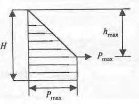
При снижении влажности в досках тангенциальной распиловки возникают корытообразные деформации. Доски радиальной распиловки при усушке уменьшаются в поперечном сечении.
7Нагрузки и данные для расчета опалубки
7.2Вертикальные нагрузки
При нагрузке на рабочий пол скользящей опалубки учитывают дополнительную нагрузку от подъемного оборудования.
Таблица 7.1
| Способ подачи бетонной смеси в опалубку | Нагрузка, кгс/м² |
|---|---|
| Спуск по лоткам, хоботам Выгрузка из бадей вместимостью: - до 0,8 м³ - более 0,8 м³ | 400 |
| 400 | |
| 600 | |
| Укладка бетононасосами | 800 |
Таблица 7.2
| Нагрузки | Коэффициент |
|---|---|
| Собственный вес опалубки | 1,1 |
| Вес бетонной смеси и арматуры | 1,2 |
| От движения людей и транспортных средств, сосредото- ченные нагрузки, в т. ч. от технологического оборудова- ния | 1,3 |
| Динамические нагрузки при выгрузке бетонной смеси | 1,3 |
7.3Горизонтальные нагрузки
Рисунок 7.1
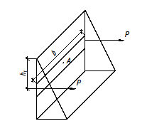
где h - высота бетонирования, м; γ - объемная масса бетонной смеси;
Для тяжелых бетонов принимают γ = 2500 кг/м³ , для других бетонов (в т. ч. легких и сверхтяжелых) - по фактической массе (давление соответственно уменьшается или увеличивается пропорционально массе).
Результирующее давление, кг/м² , равно площади эпюры и составляет
Рисунок 7.2
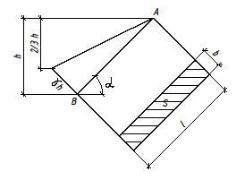
где γ - объемная масса бетонной смеси, кг/м³ ;
V - скорость бетонирования (скорость заполнения опалубки по высоте), м/ч;
К 1 - коэффициент, учитывающий влияние подвижности (жесткости) бетонной смеси;
К 2 - коэффициент, учитывающий влияние температуры бетонной смеси; h max - высота, на которой достигается максимальное (гидростатическое) давление бетонной смеси, м
Коэффициенты К 1 и К 2 приведены в таблице 7.3 и 7.4.
Таблица 7.3
| Коэффициент К 1 | Подвижность смеси с осадкой конуса (ОК), см |
|---|---|
| 0,8 | 0-2 |
| 1,0 | 2-7 |
| 1,2 | 8 и более |
Таблица 7.4
| Коэффициент К 2 | Температура бетонной смеси, °С |
|---|---|
| 1,15 | 5-10 |
| 1,0 | 10-25 |
| 0,85 | свыше 25 |
Таблица 7.5
| Нагрузки | Коэффициент |
|---|---|
| Вибрирование бетонной смеси | 1,3 |
| Боковое давление бетонной смеси | 1,3 |
| То же при бетонировании колонн | 1,5 |
| Динамические при выгрузке бетонной смеси в опалубку | 1,3 |
8Гидростатическое давление
Давление зависит от высоты столба жидкости и ее плотности.
Р где S - площадь.
Рисунок 8.1
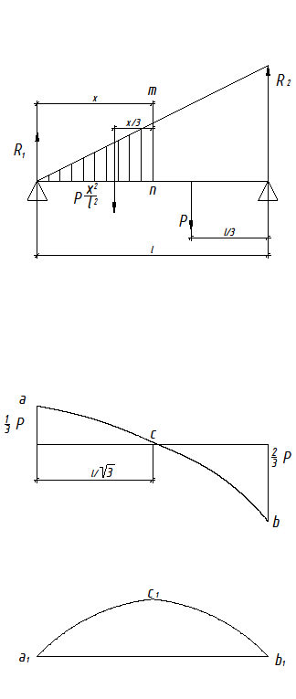
Среднее давление в точке А действует на центр тяжести и равно
Р
Рисунок 8.2
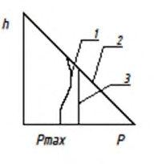
Рисунок 8.3
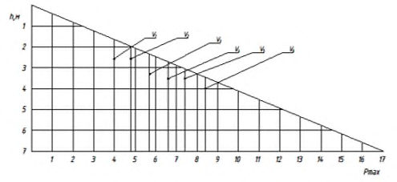
Статический момент J ст вычисляют по формуле
Момент инерции относительно центральной оси вычисляют по формуле
J
Эпюра давления показана на рисунке 8.4.
Рисунок 8.4
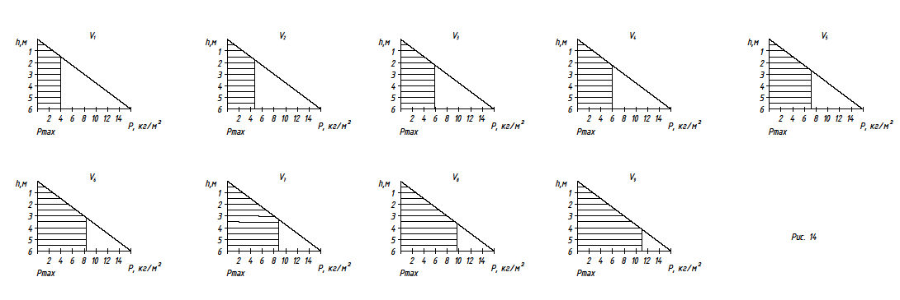
Давление в точке В определяется уравнением Р = γ h.
Давление распространяется на стенку площадью S:
Рисунок 8.5
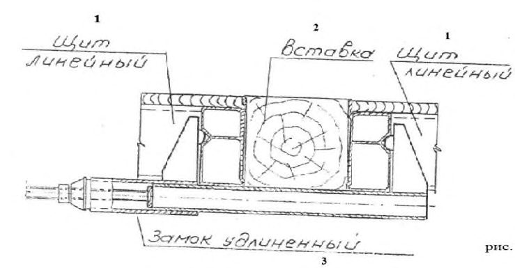
Реакция опор (нагрузка на стяжки установленные между щитами опалубки) в этом случае будет выражаться формулами:
R
Поперечную силу Q в сечении m -n определяют вычитанием заштрихованной части нагрузки из реакции R 1 :
Q
Эпюра поперечных сил представляет собой параболическую кривую aсb , изгибающий момент M в сечении m -n определяют по формуле
Момент изображен кривой a 1 c 1 b 1, максимальный момент М max проявляется в точке с 1, где поперечная сила меняет свой знак, т. е. при x = ℓ √3 .
9Боковое давление бетонной смеси на опалубку
Кроме того, наружная вибрация ухудшает качество бетонных поверхностей, так как пузырьки воздуха стремятся к источнику вибрации. Поэтому при проектировании опалубки ее не рассчитывают на использование наружных вибраторов.
По тем же причинам давление зависит от степени армирования (повышается в мало- и неармированных конструкциях).
Давление зависит от вида и состава цемента, состава бетонной смеси, добавок в бетон, вида заполнителей, В/Ц отношения, подвижности и температуры смеси. С увеличением подвижности (особенно для литых смесей) давление значительно увеличивается. Существенное влияние оказывают сроки схватывания цемента, температура смеси и температура наружного воздуха, влияющая в т. ч. на сроки схватывания. Давление тем выше, чем ниже температура бетонной смеси. Существуют и другие факторы, в т. ч. герметичность опалубки, так при потере воды при вибрировании из-за щелей и неплотности и дренажа при использовании специальных поверхностей опалубки, сетки в качестве несъемной опалубки давление значительно понижается.
При проектировании необходимо учитывать погрешности строительного производства.
- В 9.10 - 9.12 приведены некоторые корректировки расчетных схем.
Рисунок 9.1
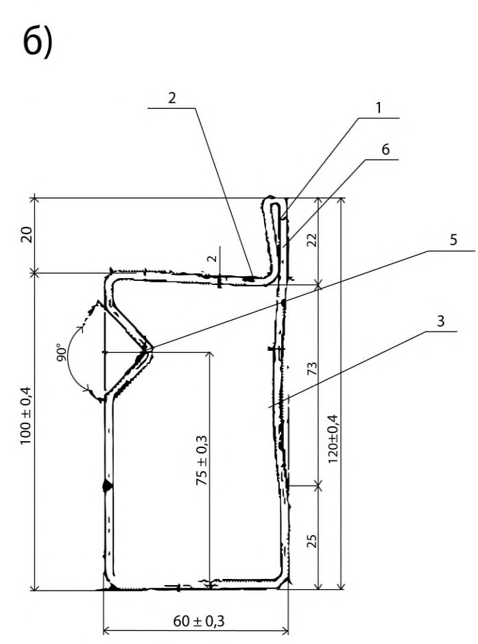
Рисунок 9.2
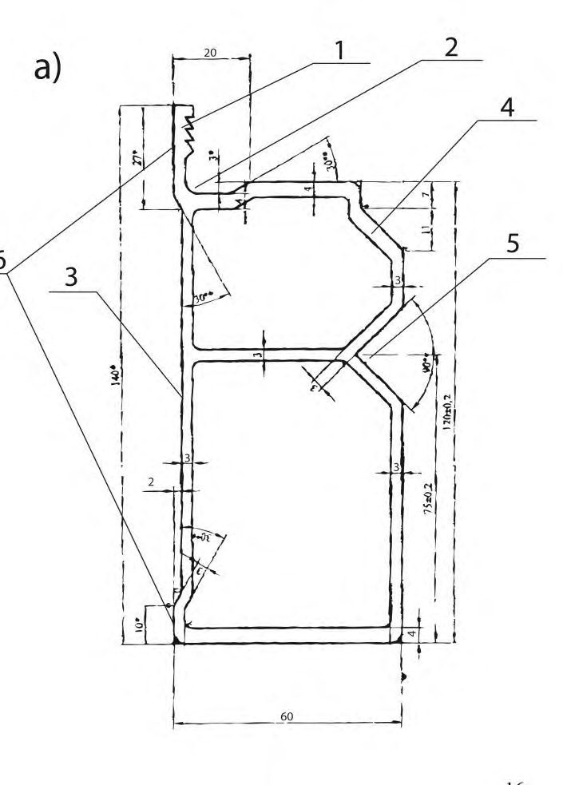
Рисунок 9.3
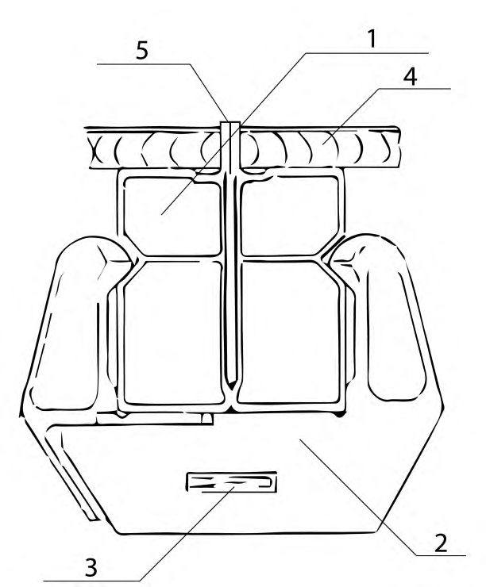
Рисунок 9.4
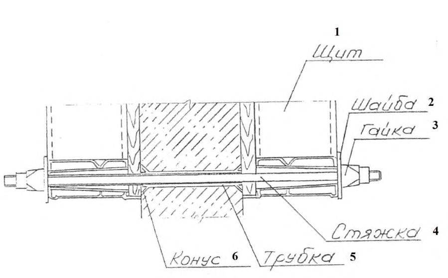
Приведены максимальные нагрузки в зависимости от V с учетом всех коэффициентов надежности.
10Расчет и правила проектирования опалубки
- а) по прочности;
- б) жесткости (в зависимости от допустимых прогибов).
Сопротивление R должно быть не менее расчетного сопротивления R p , кгс/см² , равного где M - момент, кг ∙ м (кг ∙ см);
W - момент сопротивления, м³ (см³ );
где R 1 - расчетная характеристика материала;
K - коэффициент надежности.
Расчетные характеристики зависят от применяемого материала.
Геометрические характеристики профилей (сечений) приведены в приложении Е.
где Е - модуль упругости материала, кг/см² ;
𝐽 момент инерции, см 4 , зависящий от сечения профиля.
Прогиб y , см, при сосредоточенной нагрузке вычисляют по формуле y = где P - сосредоточенная нагрузка, кг (т); ℓ - пролет балки, м;
К - коэффициент в зависимости от расчетной схемы.
Прогиб y при равномерно распределенной нагрузке вычисляют по формуле y =
где 𝓆 равномерно распределенная нагрузка, кг/м.
Прогибы вертикальных конструкций назначают в соответствии с проектными требованиями к поверхности стен и других вертикальных конструкций. Прогибы могут составлять ℓ /200, ℓ /275, ℓ /300, ℓ /400. Для конструкций подземного строительства (например, фундаменты, стены подвалов) прогиб составляет ℓ /275 (может быть назначена другая величина в зависимости от проектных требований).
Для высококачественных бетонных поверхностей прогиб поверхности после распалубки, не требующей дополнительной отделки, должен быть y = ℓ /400.
Из характеристик W и 𝐽 следует, что жесткость увеличивается с увеличением высоты профиля. При увеличении высоты профили опалубки следует дополнительно проверять на устойчивость.
10.5Правила проектирования опалубки вертикальных конструкций.
Увеличение числа стяжек позволяет запроектировать опалубку с низкими стоимостью и материалоемкостью.
Такая конструкция требует разработки монтажных схем элементов опалубки на строительной площадке с расчетом и разработкой схем сборки конкретных панелей и блоков в зависимости от технологии бетонирования.
Рисунок 10.1
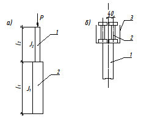
1 - ребро защиты торца фанеры; 2 - карман для герметика и удобства установки фанеры; 3 - запас для уменьшения площади соприкосновения при стыковке щитов; 4 - опора установки второго замка; 5 - опора установки центрирующего замка соединения щитов; 6 - опорные площадки стыковки щитов
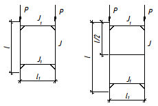
Рисунок 10.2
1 - щиты; 2 - замок; 3 - клин; 4 - фанера; 5 - специально организованные углубления в бетонной поверхности
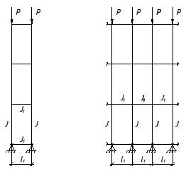
Рисунок 10.3
В связи с тем что выравнивание формообразующих поверхностей проводят по наружной поверхности щита, следует применять высокоточные замки (рисунок 10.3). При использовании литых замков их литье выполняется по выплавляемым моделям с низкими допусками, которые должны назначаться с учетом расстояния от наружной поверхности щита до опорных поверхностей.
1 - щит; 2 - шайба; 3 - гайка; 4 - стяжка; 5 - трубка; 6 - конус
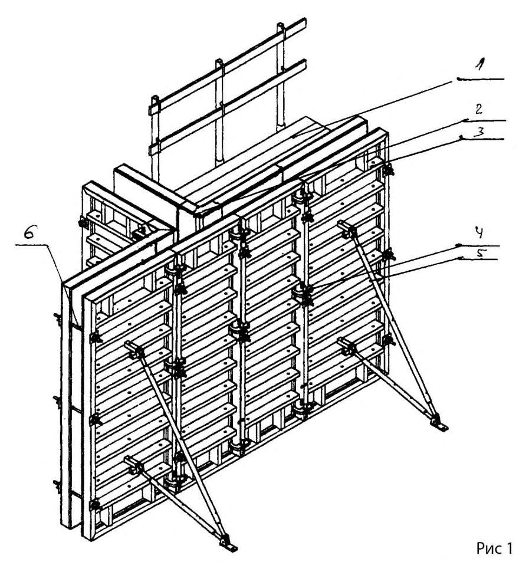
Рисунок 10.4
Рисунок 10.5
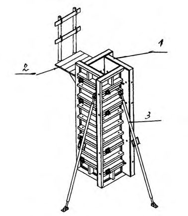
Рисунок 16
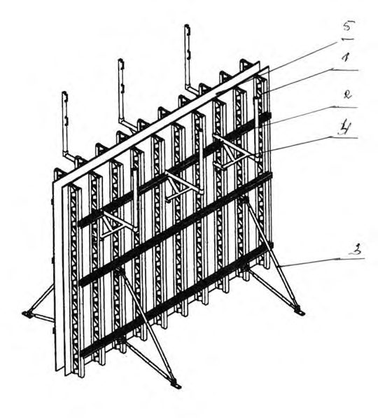
10.6Правила проектирования опалубки перекрытий (горизонтальных поверхностей)
Р
Р
Рисунок 10.7
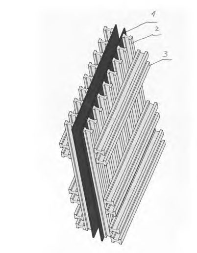
- а) отдельные стойки;
- б) рамы; в) пространственные конструкции, в которых стойки (как при наращивании по высоте, так и одного яруса (этажа)) объединяются связями в продольном и поперечном направлениях.
При расчете стоек, рам и пространственных конструкций следует вводить коэффициент безопасности S = 2,8, на который должны быть разделены все расчетные нагрузки. При проектировании двутавровых клееных балок перекрытий как целиком из хвойных пород, так и со стойками из фанеры следует вводить
коэффициент надежности 𝐾 =1,4, расчетное сопротивление R р = 𝑅 𝐾 , расчетный прогиб y p = k y .
10.6.5 Одновременное действие изгиба и сжатия (продольный изгиб)
Следует учитывать определенное критическое значение сжимающей силы. Для призматического стержня с шарнирно закрепленными концами (рисунок 10.8) критическую силу определяют по формуле Эйлера:
где Р - нагрузка; ℓ - длина стержня.
Рисунок 10.8
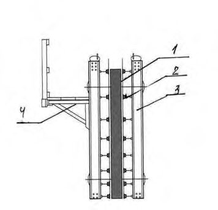
Из формулы (10.8) следует, что нагрузка зависит не от предела прочности материала стержня, а исключительно от характеристик поперечного сечения J и модуля упругости Е . Увеличить момент инерции возможно без увеличения площади поперечного сечения путем размещения материала на удалении от главных осей инерции, при этом прочность (момент сопротивления W ) растет незначительно. С точки зрения увеличения жесткости трубчатые сечения более эффективны, чем сплошные. Уменьшая толщину стенки труб и увеличивая поперечные размеры, увеличивают несущую способность. Однако существует низший предел толщины стенки, и вместо продольного изгиба всего стержня происходит местный продольный изгиб.
- 10.6.5.1 Величина критической нагрузки Р кр в значительной мере зависит от способа закрепления стержня с введением коэффициента расчетной длины μ , поэтому формула (10.8) принимает вид
Величина где λ - гибкость стержня;
10.6.5.2 Значения μ в зависимости от закрепления концов стержня и промежуточных закреплений приведены в приложении Ж.
10.6.5.3 При Р > Р кр прогиб стержня не пропорционален Р .
10.6.5.4 Критическое напряжение σ кр вычисляют по формуле σ где F - площадь сечения; σ
где 𝒾 - радиус инерции сечения, вычисляемый по формуле
σ
Из формулы (10.14) следует, что σ кр возрастает по мере увеличения гибкости стержня и при достижении σ кр предела пропорциональности формула Эйлера становится неприменимой, при
Предельная гибкость для стали 𝜆 ≥ 100, в этом случае применяют формулу Ясинского: σ
где a , b - табличные коэффициенты, определяемые эмпирически.
Условную гибкость определяют по формуле
где F - площадь сечения;
R - расчетное сопротивление.
где φ - коэффициент продольного изгиба.
Значения φ для стали приведены в приложении Д СП 16.13330.2017, для алюминия - в приложениях Г и Е СП 128.13330.2016.
10.6.8 Расчет отдельностоящих телескопических стоек (рисунок 10.9)
Коэффициенты расчетной длины μ для нижнего участка следует принимать в зависимости от отношения
Рисунок 10.9
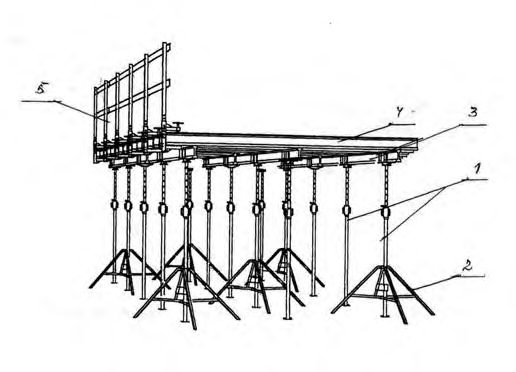
Значения μ приведены в таблице И.2 приложения И СП 16.13330.2017.
Коэффициент расчетной длины μ 2 для верхнего элемента стойки вычисляют по формуле
10.6.8.1 Несущую способность стойки вычисляют по формуле
где S - коэффициент продольной устойчивости (безопасности), равный 2,8 для стали.
10.6.8.2 Опора на стойки осуществляется через продольные балки (рисунок 10.9, б ), которые устанавливают попарно при наращивании по длине. Возможна установка в опорную вилку одной балки, что приводит к возникновению эксцентриситета е . Поэтому при расчете стоек (в т. ч. стоек рам) следует вводить поправку на внецентренные нагрузки с учетом е .
Внецентренная нагрузка на стойку - обычное явление при монтаже опалубки (в т. ч. при установке продольных и поперечных балок различных ширины и характеристик).
10.8.6.3 Изгиб стойки парой сил (рисунок 10.10) Рe вызывает нормальные напряжения. 𝑃∙𝑒∙𝑦 𝐽 -полное напряжение.
Рисунок 10.10
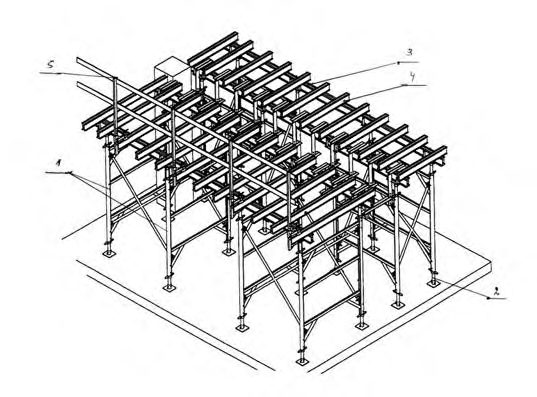
Для прямоугольного поперечного сечения при y = h /2
При ℯ < h /6 знак напряжений не меняется, при ℯ = h /6 наибольшее сжимающее напряжение равно 2𝑃 𝑏h и напряжение на противоположной стороне поперечного сечения равно нулю, при ℯ > h /6 знак напряжений меняется, тогда
где 𝒾𝑧 - радиус инерции относительно оси Z .
Уравнение (10.26) допускается применять для других форм поперечного сечения.
При внецентренной нагрузке (рисунок 10.11) f
Рисунок 10.11
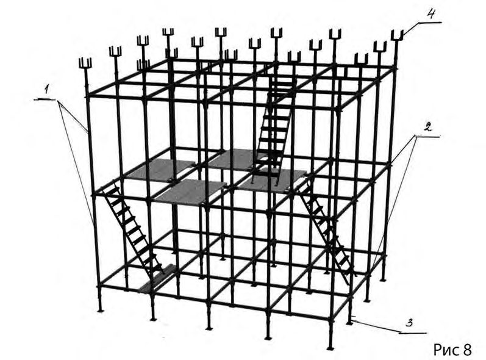
При увеличении 𝑃ℓ резко увеличиваются прогибы, быстрее, чем увеличивается 𝑃 , и при 𝑃ℓ = π/2 прогибы = ∞ .
Максимальный момент возникает в нижнем заделанном конце стойки
10.6.8.4 Количество стоек на перекрытие определяется делением общей нагрузки 𝑞 на расчетную несущую способность стойки q / P .
Уравнение изогнутой оси
10.6.8.5 Нагрузки на стойку, возникающие при бетонировании балочных (ребристых) перекрытий, показаны на рисунке 10.12.
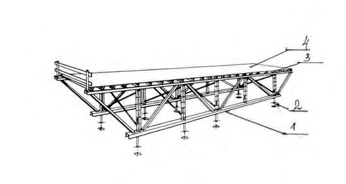
Рисунок 10.12
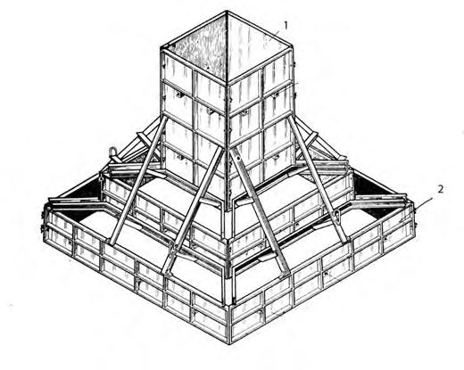
Примечание - У несвободной рамы крепление связей к стойкам не имеет свободу перемещения в плоскости рамы.
Рисунок 10.13
10.6.9.1 При соотношении 𝐻 ℓ > 6, где H - высота рамы (собранной колонны), ℓ - ширина рамы , следует проверять общую устойчивость опалубки.
10.6.9.2 При нагрузке на раму происходят изгибы стержней (рисунок 10.14).
Рисунок 10.14
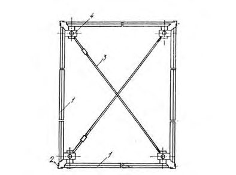
Симметричное выпучивание вызывает реактивные изгибающие моменты М .
Если 𝐽 𝐽 1 и ℓ1 ℓ велико, т. е. сопротивление горизонтальных связей незначи- тельно, критическая нагрузка приближается к 𝑃 кр = π 2 𝐸 ∙𝐽 ℓ 2 . Если эти соотношения, наоборот, невелики сопротивление горизонтальных связей увеличивается, критическая нагрузка приближается к 𝑃 кр = π 2 𝐸 ∙𝐽 ℓ 2 .
При раме со всеми стержнями одинакового поперечного сечения ( ℓ = ℓ1 и 𝐽 = 𝐽 1 ) критическая нагрузка равна
10.6.9.3 Для разборных рам с шарнирным соединением связей (свободная рама)
Таблица 10.1 - Коэффициенты 𝑛 и p для пространственных стоек
| Ярус | Однопролетные стойки | Многопролетные стойки |
|---|---|---|
| Верх- ний | 𝑛 = 𝐽 1 ∙ℓ ℓ 1 ∙𝐽 𝑃 = 𝐽 1 ∙ℓ ℓ ∙𝐽 | 𝑛 = 2к(𝑛 1 +𝑛 2 ) к+1 𝑃 = к(𝑃 1 +𝑃 2) к+1 |
| Сред- ний | 1 𝑛 = 𝐽 1 ∙ℓ ℓ 1 ∙𝐽 𝑃 = 𝐽 1 ∙ℓ ℓ 1 ∙𝐽 | 𝑛 = к(𝑛 1 +𝑛 2 ) к+1 𝑃 = к(𝑃 1 +𝑃 2) к+1 |
| Ниж- ний | 𝑛 = 𝐽 1 ∙ℓ ℓ 1 ∙𝐽 = 𝐽 1 ∙ℓ ℓ 1 ∙𝐽 | 𝑛 = к(𝑛 1 +𝑛 2 ) к+1 𝑃 = 2к(𝑃 1 +𝑃 2) к+1 |
Рисунок 10.15
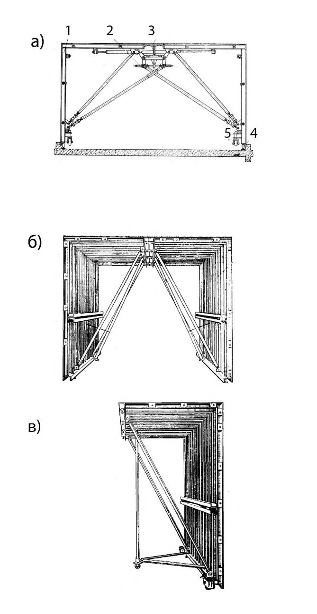
10.6.11 Коэффициент расчетной длины 𝛍 (свободная рама)
расчетная нагрузка где 𝑆 = 2,8.
10.7Особенности проектирования некоторых типов опалубки
10.7.2 Объемно-переставная опалубка
Эпюра нагрузок и варианты поддерживающих элементов опалубки перекрытий показаны на рисунке 10.16, усилие составляет:
Рисунок 10.16
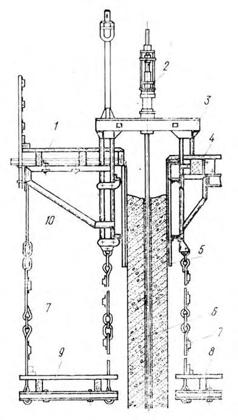
10.7.3 Скользящая опалубка
- 10.7.3.1 На щиты опалубки действуют как боковое давление бетонной смеси, так и нагрузки при подъеме, вызываемые трением бетонной смеси.
- 10.7.3.2 Щиты закрепляют на стойках домкратных рам с наклоном (конусностью) в пределах ℓ /500 ℓ /200 высоты щита, при высоте щита 1-1,2 м отклонение низа щита от вертикального составляет 5-7 мм. Нагрузки на площадь щита должны соответствовать данным, приведенным в приложении Е.
- 10.7.3.3 При послойном бетонировании по всему периметру здания (сооружения) максимальные нагрузки не достигают величины гидростатического давления.
- 10.7.3.4 Для предотвращения срывов бетона при подъеме опалубки масса бетонной смеси, контактирующей с опалубкой, должна быть больше силы трения.
В зависимости от качества поверхности формообразующих поверхностей минимальная толщина стен составляет от 8 до 18 см.
- 10.7.3.5 Наибольшие усилия возникают при начальном заполнении опалубки бетонной смесью неподвижной опалубки и первом подъеме.
- 10.7.3.6 Усилие, необходимое для подъема опалубки, F, кг, вычисляют по формуле
F
где φ - коэффициент трения;
F 0 - давление бетона на опалубку, кг/м² ; σн - нормальное сцепление, кг/см² ;
S - площадь контакта, м² (см² ).
Усилие подъема удобнее выражать через удельное тангенциальное сцепление τА и удельное трение τ . Значения этих показателей для бетона марки 150 приведены в таблице И.1.
Усилие подъема 𝐹А = τА ∙ 𝑆 А . Показатели 𝐹𝒾 и 𝑆𝒾 следует уточнять и постоянно корректировать.
- 10.7.3.7 Домкратные рамы воспринимают нагрузки от щитов опалубки, подмостей и рабочего пола. Нагрузки на рабочий пол принимают по 7.1.
Нагрузки на рабочий пол должны уточняться в ППР, т. к. они зависят от дополнительного технологического оборудования, предусмотренного ППР, в т. ч. предусмотренного запаса арматурных стержней, возможного расположения бадей с бетонной смесью, а также характеристик подъемного оборудования.
- 10.7.3.8 Для предотвращения изгиба домкратных стержней и возможности их извлечения после возведения сооружения к домкратной раме крепят защитные трубки домкратных стержней.
- 10.7.3.9 Подъемное оборудование должно позволять осуществление при подъеме «шага на месте» и автоматическое регулирование процесса подъема.
АПриложение А. Основные обозначения величин
Е - модуль упругости; F - площадь сечения; h ( H ) - высота опалубки; i - радиус инерции сечения; J - момент инерции; М - изгибающий момент; P - сосредоточенная нагрузка, давление бетонной смеси; Р кр - критическая нагрузка при продольном изгибе; Q - поперечная сила; q - равномерно распределенная нагрузка; R - расчетное сопротивление; R 1, R 2 - реакция опор, нагрузки на стяжки; V - скорость бетонирования; W - момент сопротивления; y - прогиб; γ - объемная масса; 𝜆 - гибкость стержня; λ ̅ - условная гибкость; μ - коэффициент расчетной длины; σ - напряжение; φ - коэффициент продольного изгиба.
Приложение Б
Схемы опалубок разных типов
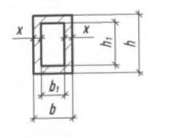
1 - подмости; 2 - угловой щит; 3 модульные щиты; 4 замки соединения щитов; 5 - подкос; 6 стяжка
Рисунок Б.1 -Крупнощитовая модульная опалубка стен
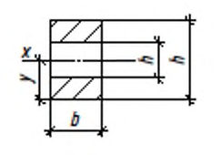
1 щиты (собранные в «мельницу»); 2 подмости; 3 подкос
Рисунок Б.2 -Крупнощитовая модульная опалубка колонн
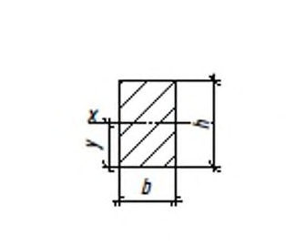
1 вертикальные фермы; 2 схватки; 3 подкос; 4 подмости; 5 палуба (фанера)
Рисунок Б.3 -Крупнощитовая разборная опалубка стен на деревянных и стальных балках
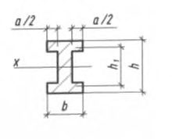
1 фанера; 2 вертикальная балка; 3 сдвоенные балки
Рисунок Б.4 -Крупнощитовая разборная опалубка на деревянных балках
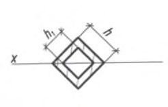
1 палуба (фанера); 2 горизонтальные балки (схватки); 3 вертикальные балки; 4 подмости
Рисунок Б.5 -Разборная крупнощитовая опалубка
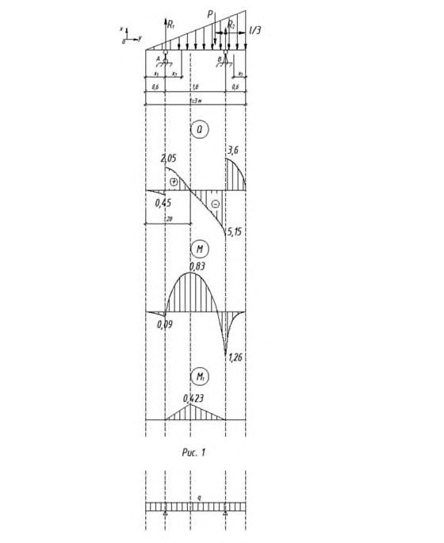
1 телескопические стойки; 2 тренога; 3 продольные балки; 4 поперечные балки; 5 ограждение
Рисунок Б.6 -Разборно-переставная опалубка перекрытий на стойках
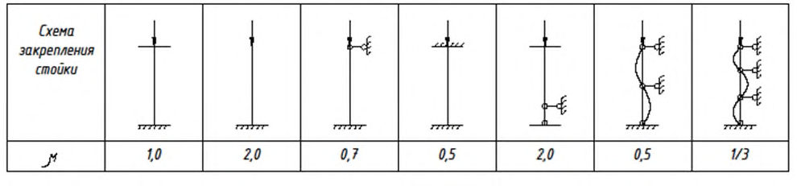
1 - рамы; 2 домкрат; 3 продольные балки; 4 поперечные балки; 5 - ограждение
Рисунок Б.7 -Разборно- переставная опалубка перекрытий на рамах
1 стойки; 2 шарнирное соединение; 3 домкрат; 4 - вилки балок
Рисунок Б.8 -Система пространственных стоек опалубки перекрытий
1 несущая ферма; 2 домкрат; 3 поперечные балки; 4 палуба (фанера)
Рисунок Б.9 -Крупнощитовая (столовая) опалубка перекрытий
1 - опалубка подколонника; 2 опалубка ступеней; 3 отжимное устройство
Рисунок Б.10 - Блок-форма ступенчатых фундаментов
1 щиты; 2 угловые соединения; 3 связи; 4 вертикальная стойка
Рисунок Б.11 - Блочная опалубка
а -Побразная опалубка: 1 -Г-образный блок; 2 -распалубочный механизм; 3 центральная вставка; 4 домкрат; 5 - ролик б - Г-образная опалубка; в - Г-образная полусекция Г-образной опалубки
Рисунок Б.12 Объемно-переставная опалубка
1 наружные подмости; 2 гидродомкрат с регулятором горизонтальности; 3 домкратная рама; 4 рабочий пол; 5 щит опалубки; 6 домкратный стержень; 7 подвески; 8 внутренние подмости; 9 наружные подмости; 10 кронштейн подмостей
Рисунок Б.13 - Скользящая опалубка
ВПриложение В. Характеристика опалубок различных типов и область их применения
Таблица В.1
| Тип опалубки | Применяемость |
|---|---|
| Мелкощитовая (разборно-переставная) | Бетонирование монолитных конструкций, в том числе с вертикальными (стен, колонн и т. п.), горизонтальными (перекрытий, риге- лей и т. п.) и наклонными поверхностями различного очертания с разборкой на отдель- ные элементы при демонтаже, а также сты- ков, проемов монолитных конструкций с не- большой опалубочной поверхностью. Мо- жет применяться вместе с крупнощитовой опалубкой для бетонирования сложных по конфигурации монолитных конструкций и как вставки, в том числе в стесненных усло- виях производства |
| Крупнощитовая | Бетонирование крупноразмерных монолит- ных конструкций, в т. ч. стен и перекрытий зданий и сооружений с монтажом и демонта- жом крупными элементами (в т. ч. крупными щитами, панелями и блоками). Всвязи с уни- версальностью и рядом преимуществ круп- нощитовая модульная опалубка имеет наибольшее применение |
| Блочная | Бетонирование замкнутых отдельно стоя- щих монолитных конструкций, например ро- стверков, колонн, фундаментов, а также внутренних поверхностей замкнутых ячеек жилых зданий и лифтовых шахт |
| Объемно-переставная | Одновременное бетонирование стен и пере- крытий зданий и сооружений. Применяется редко |
| Скользящая | Бетонирование вертикальных (главным об- разом высотой более 40 м) стен зданий и со- оружений, преимущественного постоянного сечения. Применяется крайне редко |
| Горизонтально-перемещаемая | Бетонирование водоводов, коллекторов, тун- нелей, возводимых открытым способом (ка- тучая опалубка); обделка туннелей, возводи- мых закрытым способом (туннельная опа- лубка). Имеет ведомственное применение, в т. ч. в метростроении. Катучая опалубка применяется редко |
| Подъемно-переставная | Бетонирование вертикальных высотных со- оружений переменным сечением, например градирни, трубы, опоры мостов и эстакад значительной высоты |
| Пневматическая | Бетонирование вертикальных высотных со- оружений переменным сечением, например градирни, трубы, опоры мостов и эстакад значительной высоты |
|---|---|
| Несъемная | Бетонирование монолитных конструкций без распалубливания, создание гидроизоля- ции, облицовки, утепления, внешнего арми- рования и др. Может включаться или не включаться в расчетное сечение монолит- ной конструкции. Применяется редко |
| Примечание - Типы опалубки применяют в зависимости от вида и размеров бетонируемых конструкций и способа производства бетонных работ. | Примечание - Типы опалубки применяют в зависимости от вида и размеров бетонируемых конструкций и способа производства бетонных работ. |
ГПриложение Г. Характеристики древесины и фанеры
Таблица Г.1 - Плотность древесины и фанеры
| Порода древесины | Плотность древесины, кг/м³ , в конструкциях |
|---|---|
| Хвойные: | |
| - лиственница | 650-800 |
| - сосна, ель, кедр, пихта | 500-600 |
| Твердые лиственные: | |
| - дуб, береза, бук, ясень, клен, граб, акация, вяз и ильм | 700-800 |
| Мягкие лиственные: | |
| - осина, тополь, ольха, липа | 500-600 |
Примечания
1 Плотность свежесрубленной древесины хвойных и мягких пород следует принимать равной 850 кг/м³ , твердых лиственных пород - 1000 кг/м³ .
- 2 Плотность клееной древесины следует принимать как для неклееной.
- 3 Плотность обычной фанеры следует принимать равной плотности древесины шпонов, а бакелизированной - 1000 кг/м³ .
Таблица Г.2 -Расчетные сопротивления ели и лиственницы европейской
В килограммах на квадратный сантиметр
| Напряженное состояние и харак- теристики элементов | Обозначение | Расчетные сопротивления, кгс/см² *, для сортов древесины | Расчетные сопротивления, кгс/см² *, для сортов древесины | Расчетные сопротивления, кгс/см² *, для сортов древесины |
|---|---|---|---|---|
| 1 | 2 | 3 | ||
| 1 Изгиб, сжатие и смятие вдоль волокон: а) элементы прямоугольного се- чения (за исключением указан- ных в подпунктах «б», «в») высо- | R и , R с , R см | 140 | 130 | 85 |
| б) элементы прямоугольного се- чения шириной св. 11 до 13 см при высоте сечения св. 11 до 50 см | R и , R с , R см | 150 | 140 | 100 |
| в) элементы прямоугольного се- чения шириной св. 13 см при вы- соте сечения св. 13 до 50 см | R и , R с , R см | 160 | 150 | 110 |
| Напряженное состояние и харак- теристики элементов | Обозначение | Расчетные сопротивления, кгс/см² *, для сортов древесины | Расчетные сопротивления, кгс/см² *, для сортов древесины | Расчетные сопротивления, кгс/см² *, для сортов древесины |
|---|---|---|---|---|
| 1 | 2 | 3 | ||
| г) элементы из круглых лесома- териалов без врезок в расчетном сечении | R и , R с , R см | - | 160 | 100 |
| 2 Растяжение вдоль волокон: а) неклееные элементы | R р | 100 | 70 | - |
| б) клееные элементы | R р | 120 | 90 | - |
| 3 Сжатие и смятие по всей пло- щади поперек волокон | R с.90 , R см.90 | 18 | 18 | 18 |
| 4 Смятие поперек волокон мест- ное: а) в опорных частях конструк- ций, лобовых врубках и узловых примыканиях элементов | R см.90 | 30 | 30 | 30 |
| б) под шайбами при углах смятия от 90° до 60° | R см.90 | 40 | 40 | 40 |
| 5 Скалывание вдоль волокон: а) при изгибе наклееных элемен- тов | R ск | 18 | 16 | 16 |
| б) при изгибе клееных элементов | R ск | 16 | 15 | 15 |
| в) в лобовых врубках для макси- мального напряжения | R ск | 24 | 21 | 21 |
| г) местное в клеевых соедине- ниях для максимального напря- жения | R ск | 21 | 21 | 21 |
| 6 Скалывание поперек волокон: а) в соединениях неклееных эле- ментов | R ск.90 | 10 | 8 | 6 |
| б) в соединениях клееных эле- ментов | R ск.90 | 7 | 7 | 6 |
Окончание таблицы Г.2
| Напряженное состояние и харак- теристики элементов | Обозначение | Расчетные сопротивления, кгс/см² *, для сортов древесины | Расчетные сопротивления, кгс/см² *, для сортов древесины | Расчетные сопротивления, кгс/см² *, для сортов древесины |
|---|---|---|---|---|
| 1 | 2 | 3 | ||
| 7 Растяжение поперек волокон элементов из клееной древесины | R р.90 | 3,5 | 3 | 2,5 |
* При переводе значений в мегапаскали (МПа) все показатели уменьшаются примерно в 10 раз, кг/см² ≈ 0,1 МПа (кг/см² = 980066,5 Па; кг/мм² = 9,80665 ∙10 6 Па).
При использовании мегапаскалей в дальнейших расчетах следует иметь в виду, что размерность Па = кг м∙с 2 .
Примечания
- 1 Расчетные сопротивления следует умножать на коэффициент условия работы на открытом воздухе 0,85.
- 2 Для опалубки, учитывая кратковременные действия нагрузок, принимают коэффициент, равный 1,2.
- 3 Коэффициент для расчетных сопротивлений других древесных пород приведен в таблице Г.3.
Таблица Г.3
| Порода | Коэффициент для расчетных сопротивлений | Коэффициент для расчетных сопротивлений | Коэффициент для расчетных сопротивлений |
|---|---|---|---|
| древесины | растяжению, изгибу и сжа- тию вдоль во- локон | сжатию и смя- тию поперек волокон | скалыванию |
| Лиственница, кроме европейской и японской | 1 | 1,2 | 1,0 |
| Дуб | 1,3 | 2 | 1,3 |
| Ясень, клен, граб | 1,3 | 2 | 1,6 |
| Береза, бук | 1,1 | 1,6 | 1 |
| Ольха, липа, осина, тополь | 0,8 | 1 | 0,8 |
Таблица Г.4 -Расчетные сопротивления строительной фанеры
| Расчетные сопротивления, кгс/см² * | Расчетные сопротивления, кгс/см² * | Расчетные сопротивления, кгс/см² * | Расчетные сопротивления, кгс/см² * | Расчетные сопротивления, кгс/см² * | |
|---|---|---|---|---|---|
| Вид фанеры | растяжению в плоско- сти листа R ф.р | сжатию в плоскости ли- ста R ф.с | изгибу из плоскости ли- ста R ф.и | скалыванию в плоско- сти листа R ф.ск | срезу перпендикулярно плоскости листа R ф.ср |
| 1 Фанера клееная бе- резовая марки ФСФ по ГОСТ 3916.1 сортов В/ВВ, В/С, ВВ/С по ГОСТ 3916.1: а) семислойная тол- щиной 8 мм и более: - вдоль волокон наружных слоев | 140 | 120 | 160 | 8 | 60 |
Продолжение таблицы Г.4
| Расчетные сопротивления, кгс/см² * | Расчетные сопротивления, кгс/см² * | Расчетные сопротивления, кгс/см² * | Расчетные сопротивления, кгс/см² * | Расчетные сопротивления, кгс/см² * | |
|---|---|---|---|---|---|
| Вид фанеры | растяжению в плоско- сти листа R ф.р | сжатию в плоскости листа R ф.с | изгибу из плоскости листа R ф.и | скалыванию в плоско- сти листа R ф.ск | срезу перпендику- лярно плоскости листа R ф.ср |
| - поперек волокон наружных слоев | 90 | 85 | 65 | 8 | 60 |
| - под углом 45° к волокнам | 45 | 70 | - | 8 | 90 |
| б) пятислойная тол- щиной 5-7 мм: - вдоль волокон | |||||
| наружных слоев | 140 | 130 | 180 | 8 | 50 |
| - поперек волокон наружных слоев | 60 | 70 | 30 | 8 | 60 |
| - под углом 45° к во- локнам | 40 | 60 | __ | 8 | 90 |
| 2 Фанера клееная из древесины листвен- ницы марки ФСФ по ГОСТ 3916.1 сортов В/ВВ и ВВ/С по ГОСТ 3916.1 семислойная толщиной 8 мм и бо- | |||||
| лее: - вдоль волокон наружных слоев | 90 | 170 | 180 | 6 | 50 |
| - поперек волокон наружных слоев | 75 | 130 | 110 | 5 | 50 |
| - под углом 45° к во- локнам | 30 | 50 | - | 7 | 75 |
Окончание таблицы Г.4
| Расчетные сопротивления, кгс/см² * | Расчетные сопротивления, кгс/см² * | Расчетные сопротивления, кгс/см² * | Расчетные сопротивления, кгс/см² * | Расчетные сопротивления, кгс/см² * | |
|---|---|---|---|---|---|
| Вид фанеры | растяжению в плоско- сти листа R ф.р | сжатию в плоскости листа R ф.с | изгибу из плоскости листа R ф.и | скалыванию в плоско- сти листа R ф.ск | срезу перпендику- лярно плоскости листа R ф.ср |
| 3 Фанера бакелизиро- ванная марки ФБС по ГОСТ 11539 толщи- ной 7 мм и более: - вдоль волокон наружных слоев | 320 | 280 | 330 | 18 | 110 |
| - поперек волокон наружных слоев | 240 | 230 | 250 | 18 | 120 |
| - под углом 45° к во- локнам | 165 | 210 | __ | 18 | 160 |
* При переводе значений в мегапаскали (МПа) все показатели уменьшаются примерно в 10 раз, кг/см² ≈0,1 МПа (кг/см² = 980066,5 Па; кг/мм² = 9,80665 ∙10 6 Па).
При использовании мегапаскалей в дальнейших расчетах следует иметь в виду, что размерность Па = кг м∙с 2 .
Таблица Г.5 -Модуль упругости и коэффициент Пуассона фанеры
| Вид фанеры | Модуль упругости Е ф , кгс/см² | Модуль сдвига G ф , кгс/см² | Коэффициент Пуассона v ф |
|---|---|---|---|
| 1 Фанера клееная бере- зовая марки ФСФ по ГОСТ 3916.1 сортов В/ВВ, В/С, ВВ/С по ГОСТ 3916.1 семислой- ная и пятислойная: - вдоль волокон наруж- ных слоев | 90 000 60 000 | 7 500 | 0,085 |
| - поперек волокон наружных слоев | 7 500 | 0,065 | |
| - под углом 45° к во- | 25 000 | 30 000 | 0,6 |
| ницы марки ФСФ по ГОСТ 3916.1 сортов В/ВВ и ВВ/С по ГОСТ 3916.1 семислойная: - вдоль волокон наруж- | 70 000 | 8 000 | 0,7 |
| - поперек волокон наружных слоев | 55 000 | 8 000 | 0,06 |
| - под углом 45° к во- локнам | 20 000 | 22 000 | 0,6 |
| 3 Фанера бакелизиро- ванная марки ФБС по ГОСТ 11539 | 120 000 | 10 000 | 0,085 |
| - вдоль волокон наруж- ных слоев | 85 000 | 10 000 | 0,065 |
| - поперек волокон наружных слоев - под углом 45° к во- локнам | 35 000 | 40 000 | 0,7 |
Примечание - Для условий работы опалубки модуль упругости древесины и фанеры принимают с коэффициентом 0,85. Модуль упругости при расчете по предельным состояниям древесины вдоль волокон Е = 100000 кг/см² , поперек волокон E = 4000 кг/см² . При расчетах на устойчивость и по деформации модуль упругости древесины принимают равным 𝐸 1 = 300∙ R , для фанеры 𝐸ф 1 = 250 R , где R - расчетное сопротивление сжатию древесины и, соответственно, фанеры.
Приложение Д
Моменты инерции J , моменты сопротивления W и радиусы инерции 𝓲 некоторых сечений
Таблица Д.1
| J , см 4 | W= 𝐽 𝑦 , см³ | 𝒾 = √ 𝐽 𝐹 , см |
|---|---|---|
| 𝑏h 3 -𝑏 1 h 1 3 12 | 𝑏h 3 -𝑏 1 h 1 3 6h | √ 𝑏h 3 -𝑏 1 h 1 3 12 (𝑏h-𝑏 1 h 1 ) |
| 𝑏(h 3 -h 1 3 ) 12 | 𝑏(h 3 -h 1 3 ) 6h | √ h 3 -h 1 3 12(h-h 1 ) |
| 𝑏h 3 12 | 𝑏h 2 24 | h √18 = 0,236h |
Продолжение таблицы Д.1
| 𝜋𝑑 4 64 = 0,049087 𝑑 4 | 𝜋𝑑 3 32 = 0,098175 𝑑 3 | 𝑑 4 |
|---|---|---|
| 𝜋(𝑑 4 -𝑑 1 4 ) 64 = = 0,049087 ∙ ∙( 𝑑 4 -𝑑 1 4 ) * | 𝜋(𝑑 4 -𝑑 1 4 ) 32𝑑 = = 0,098175 ∙ ∙ 𝑑 4 -𝑑 1 4 𝑑 | 𝑑√9𝜋 2 -64 12π = = 0,132168 𝑑 |
| 𝑏h 3 12 | 𝑏h 2 6 | h √12 = 0,289 h |
| 𝑏h 3 -𝑎h 1 3 12 | 𝑏h 3 -𝑎h 1 3 6h | - |
Окончание таблицы Д.1
| J , см 4 | W= 𝐽 𝑦 , см³ | 𝒾 = √ 𝐽 𝐹 , см |
|---|---|---|
| h 4 -h 1 4 12 | h 4 -h 1 4 6h ∙ √2 = = 0,118 ∙ ∙ h 4 -h 1 4 h | √ h 2 +h 1 2 12 = = 0,289 √h 2 +h 1 2 |
Примечание - При наличии утолщений круглого сечения (бульб) алюминиевого профиля момент инерции при кручении J увеличивается на 𝑛 ∙ π ∙𝑑 4 32 , где n - число бульб в сечении, d - диаметр бульб.
ЕПриложение Е. Расчет модульных щитов
Е.1 Принимают размеры щитов h = 3 м, ширину b = 1,0 м. При иной ширине щита b = 0,3; 0,6; 0,9; 1,2; 1,5 нагрузки умножают на соответствующую ширину щита b при максимальной нагрузке:
- а) гидростатической;
- б) расчетной.
Е.2 Эпюра давления при гидростатической нагрузке с опорами на концах щита показана на рисунке 9.2.
При размерности в килограммах (кг) и сантиметрах (см)
Р =112,5 кг∙см, 𝓆 = 0,75 кг/см² ·100 см = 75 кг/см,
Необходимое значение W составит
- для стальной опалубки W ≥ 𝑀 𝑅 ≥ 199,7 см³ ;
- алюминиевой W ≥ 360,6 см³ .
Для прогибов l /400 необходимый для стали момент инерции должен отвечать условию 𝒥 ≥ 400·𝑞𝑙³ 𝐸 =1257/2 ≥625,7 см 4 (при установке щитов одновременно нагружены два профиля).
Щиты с такими показателями малопригодны, поэтому необходимо менять расположение опор (установку стяжек), а также вводить дополнительные промежуточные опоры.
Е.3 Схема нагрузок с двумя консолями показана на рисунке Е.1.
На рисунке Е.1, а , приведена эпюра поперечных сил Q , M - эпюра моментов M , M 1 - эпюра моментов от условной единичной силы Р =1 для расчета прогибов; на рисунке Е.1, б , приведена схема равномерно распределенных нагрузок.
Для разборной опалубки возможно подбирать оптимальную установку опор, для модульных универсальных щитов принимают симметричную расстановку.
Рисунок Е.1
Определяют реакцию опор:
Расчет проводят слева направо по участкам:
при x = 2,4 м Q 2 = 5,15 т; M 2 = 1,26 т ∙ м
Максимальный момент при Q = 0; 2,05 = P 𝓍 2 ℓ 2 ; x = 1,28.
Таким образом, M = 0 на пролете 1,8 м при x = 2,05 м.
Двойное интегрирование и нахождение постоянных интегрирования дает результат:
Тот же результат должен быть получен при решении с помощью способа Верещагина.
Е.4 Во избежание длительных расчетов допускается заменить треугольную нагрузку на эквивалентную равномерно распределенную с заменой 𝓆 = 7,5 т/м на 3,75 т/м.
Такой расчет дает несколько завышенные результаты, что приемлемо, ввиду множества неопределенных факторов при косом изгибе профиля. Кроме того, при расчете вертикальных ребер щитов следует учитывать, что на них создается не равномерно распределенная нагрузка, а сосредоточенные нагрузки по количеству поперечных ребер.
Рисунок Е.2
При соединении соседних щитов стяжки (опора) устанавливаются на один щит, соседний щит опирается на гайку или шайбу (рисунок Е.2). При диаметре гайки или шайбы меньшего диаметра опора соседнего щита бывает недостаточной, что приводит к эксцентриситету нагрузки, вызывающей скручивание профиля.
При равномерно распределенной нагрузке
Необходимый момент инерции 𝒥 для получения прогибов ℓ /400, ℓ /300, ℓ /275 составляет:
- 1) для алюминиевой опалубки 𝒥 = 400 (300)(250)𝓆ℓ 3 𝐸 = 400 (300) (250);
- 2) для стальной 𝒥 3. = 133 (100) (83).
Для алюминиевой опалубки целесообразно введение дополнительной опоры.
Е.5 При введении третьей опоры необходимый момент инерции и сопротивления при равномерно распределенной нагрузке для прогиба ℓ /400 составит
- для алюминиевой опалубки 𝒥 = 0,0035 400∙ 𝓆ℓ 3 Е = 105,3 см 4 ; W = 89 см³ ;
- стальной опалубки 𝒥 = 35см 4 ; W = 4,34 см³ .
При такой схеме нагрузок возможно запроектировать облегченную опалубку.
Е.6Расчет поперечных ребер
Поперечные ребра щита загружены равномерно распределенной нагрузкой 𝓆 = 7,5 т/м² (максимальный в нижней части щита); 𝓆 ∙ b = 7,5 т/м.
При расчете поперечных ребер (или горизонтальных балок разборной опалубки) должен быть выбран оптимальный вариант щита с подбором шага установки ребер, материала, толщины и характеристик палубы.
С увеличением жесткости и несущей способности палубы шаг ℓ ребер увеличивается, W и J профиля принимают большие размеры при соответствующем уменьшении их количества.
При фанере толщиной δ = 18 мм шаг установки ребер ℓ составляет 30 см. При расчете палубы (фанера) равномерно распределенная нагрузка 𝓆 = 4,5 т/м. Количество промежуточных опор соответствует количеству поперечных ребер.
Е.7 Эпюра моментов при расчетной нагрузке, отличающейся от гидростатической, приведена на рисунках 7.2 и 10.2.
Р max выбирают согласно данным, приведенным в разделах 7 и 9 (рисунок 10.2), и рассчитывают для каждого конкретного варианта по заданию проектирования опалубки в зависимости от характера монолитных конструкций, высоты, скорости бетонирования и других факторов.
- Е.7.1 При опорах на консолях пролета и одном из вариантов при Р max = 6 т/м² ; h 1 = 2,4 м ; h 2 = 2,7 м ; h = 3 м; Р = 7,2 т/м ; Р 1 = 3,6 т/м общая нагрузка составит Р 2 = 10,8 т/м.
Точку приложения общей нагрузки (рисунок Е.3) находят из соотношения ℓ1 ℓ2 = 𝑃1 𝑃 , откуда ℓ1 = 0,5 ℓ2 ; ℓ1 = 0,37 м ; ℓ2 = 0,73 м, таким образом, h 3 = 1,97 м.
Рисунок Е.3
Подставляя данные в формулу (8.9) или М max = 7,8 находят момент верхней части М 1 = 7,2 ∙2,4 7,8 = 2,21 т, момент нижней части эпюры М 2 = 𝑃∙𝑎∙𝑏 ℓ = 3,6∙2,7∙0,3 3 = 0,972.
Суммарный момент М с = 3,18.
Нагрузка на щит 10,8∙1,2 = 12,96 т шириной b = 1,2 м.
Нагрузка верхней части эпюры 7,2∙1,2 = 8,64, нижней - 3,6∙1,2 = 4,32.
Эквивалентная равномерно распределенная нагрузка 𝓆 = 3,4 (для сравнения с треугольной нагрузкой).
Нагрузка на стяжки R 1 = 4,32; R 2 = 8,64.
Поперечные ребра щита загружены равномерно распределенной нагрузкой 𝓆 = 6 т/м² , на щит 6 ∙ 1,2 = 7,2 т/м.
Е.7.2 При опорах с консолями (рисунок Е.1) величину М 1 и прогибы y выбирают по методике, приведенной в 10.5.9 в зависимости от максимальных нагрузок на опалубку.
𝑃ℓ
Приложение Ж Коэффициенты расчетной длины
𝛍
Таблица И.1
ИПриложение И. Тангенциальное сцепление и удельное трение
| палубы | Характеристика формующей по- | Тангенциальное (ка- сательное) сцепле- ние (точка А ), кгс/м² | Тангенциальное (ка- сательное) сцепле- ние (точка А ), кгс/м² | Удельное трение τ 𝒾 , кгс/м² | Удельное трение τ 𝒾 , кгс/м² |
|---|---|---|---|---|---|
| Материал | верхности | τ 𝐴 | Рост по от- ношению к чистой по- верхности, % | τ 𝒾 | Рост по от- ношению к чистой по- верхности, % |
| Сталь без смазки | Чистая Сплошная цементная корка Сплошная шероховатая бетонная корка | 280 315 520 | - 115 182 | 180 230 440 | - 128 245 |
| Сталь со смазкой | Чистая, со смазкой Сплошная цементная корка Сплошная шероховатая бетонная корка | 180 250 490 | - 135 274 | 80 86 250 | - 108 310 |
| Дощатая промасленная палуба | Чистая Сплошная бетонная корка Сплошная очень шероховатая бе- тонная корка | 450 820 705 | - 182 157 | 198 380 395 | - 192 199 |
| Дощатая промасленная палуба | Чистая На 80 %-90 %покрыта цемент- ной коркой Сплошная цементная корка | 308 540 730 | - 144 194 | 233 430 490 | - 184 210 |
| Дощатая промасленная палуба | Чистая На 80 %покрыта тонкой цемент- ной пленкой Сплошная цементная пленка | 190 195 440 | - 103 232 | 76 100 124 | - 143 163 |
| Фанера с покрытием, ламинированная | Чистая На 80 %покрыта тонкой цемент- ной пленкой Сплошная цементная пленка | 190 195 440 | - 103 232 | 76 100 124 | - 143 163 |
Окончание таблицы И.1
| палубы | Характеристика формующей | Тангенциальное (ка- сательное) сцепле- ние (точка А ), кгс/м² | Тангенциальное (ка- сательное) сцепле- ние (точка А ), кгс/м² | Удельное трение τ 𝒾 , кгс/м² | Удельное трение τ 𝒾 , кгс/м² |
|---|---|---|---|---|---|
| Материал | по- верхности | τ 𝐴 | Рост по от- ношению к чистой по- верхности, % | τ 𝒾 | Рост по от- ношению к чистой по- верхности, % |
| Гетинакс | Чистая На 30 %-40 %покрыта тонкой цементной пленкой Сплошной цементный налет | 110 188 250 | - 171 227 | 52 65 72 | - 130 138 |
| Текстолит | Чистая На 40 %-50 %покрыта тонкой цементной пленкой Сплошной цементный налет | 220 365 410 | - 166 186 | 90 151 142 | - 168 158 |
| Стеклопластик полиэфирный листовой | Чистая Сплошная цементная корка Сплошная весьма шероховатая цементная корка | 310 450 515 | - 145 166 | 83 85 245 | - 101 296 |